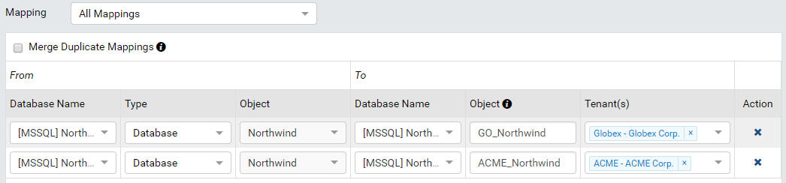
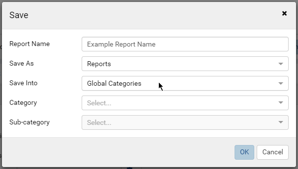
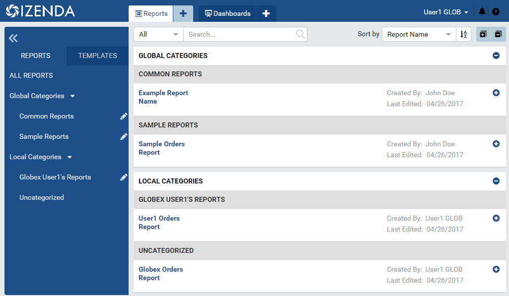

Global Report Setup Guide¶
Tip
Global Report is available from release v2.0.0.
The Global Categories (Global Report) is a central place to share system reports/templates among all tenants. This section, categories/sub-categories and reports underneath will be visible in Report List of tenants.
Usages of Global Categories may include a category of sample reports or common reports that are shared among all tenants.
{kind=link}
Fig. 141 Global Categories containing sample and common reports in Report List of one tenant
For the global report to display relevant data, each tenant must have a connection to the same database or one with structure similar to that of the global report.
Setup Steps¶
Set up tenants, for example ACME and Globex Online.
Add connection for the global report (Northwind) then add connections for tenants (ACME_Northwind and GO_Northwind).
Map connections of tenant to the system connection in Data Setup > Database Mapping.
Fig. 142 Database Mapping
Set up tenant roles and users that can access reports.
- 
Fig. 143 Save report into Global Categories
Create the report at system level, then save it into Global Categories.
- 
Fig. 144 Global Categories in Report List of sample tenant
The Global Categories and global reports are visible to tenant users.
{kind=link}
{kind=link}
{kind=link}
Features of Global Report¶
- Best way to share reports among tenants (using Copy Management to copy reports takes more time).
- The Global Categories is well positioned in Left Navigation, easily accessible.
- Report data is read from the tenant’s connection only.
- The names “Global Categories” and “Local Categories” can be aliased in Report Setting.
- When saving an existing report in a local system category as a global report, please note that any subreports used in the report must also be saved into global categories as well. Once this is complete the subreport links must be udpated to point to the correct global subreport as the report ids will be new in the global categories.